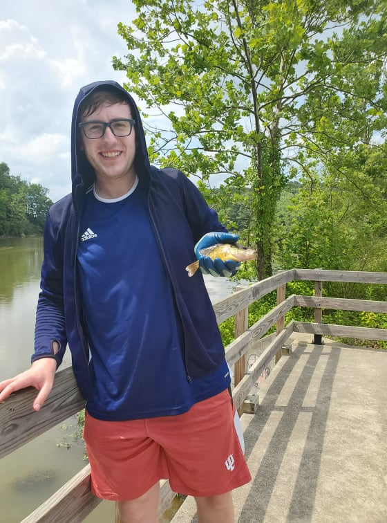

What I love to do outside of school
Cooking
I love cooking new delicious dishes because I love eating them hahaha! The man channels I watch for new recipes are Sous Vide Everything, Adam Ragusea , Babish Culinary Universe, and Ethan Chlebowski to name a few!

Fishing
I primarily fly fish, but depending on the body of water I might bait cast.
Plants
A side hobby that I picked up during the pandemic is creating bonsai. I had not done any form of gardening in years since I helping my Grandma with here granden. A year later and I am still creating new bonsai! As of right now I'm making one of my middle school best friends a bonsai wedding gift! Similaring to cooking I draw inspiration for bonsai from YouTube particularly the channel Herons Bonsai.


Astrophotography
Now this side hobby of mine is completely self inspired. The reason for this is because my Newtoian 114 mm telescope has the worst documented finder-scope... So much so that the box the telescope came in didn't even have instructions to aligen the scope... I took the liberty of monopolizing the YouTube tutorial market on this finder-scope and produced the only video on how to aligen it.